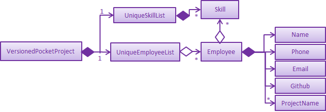

By: Team CS2103-AY1819S2-W10-2 Since: Jan 2019 Licence: MIT
- 1. Introduction
- 2. Background Information
- 3. Before We Begin
- 4. Setting up
- 5. Design
- 6. Implementation
- 6.1. Add employee/milestone/user story to projects feature
- 6.2. Remove employee/milestone from projects feature
- 6.3. Find Employee/Project/Skill/All feature
- 6.4. List Employee/Project feature
- 6.5. Stats feature
- 6.6. User Story feature
- 6.7. Undo/Redo feature
- 6.8. [Proposed] Data Encryption
- 6.9. Logging
- 6.10. Configuration
- 7. Documentation
- 8. Testing
- 9. Dev Ops
- 10. FAQ
- Appendix A: Product Scope
- Appendix B: User Stories
- Appendix C: Use Cases
- Appendix D: Non Functional Requirements
- Appendix E: Glossary
- Appendix F: Product Survey
- Appendix G: Instructions for Manual Testing
- G.1. Launch and Shutdown
- G.2. Add Command
- G.3. Delete Command
- G.4. Editing an employee
- G.5. Deleting a project
- G.6. Removing an employee from a project
- G.7. Removing a milestone from a porject
- G.8. Finding an employee/project by keywords in their names
- G.9. Finding employees with specific skills
- G.10. Finding projects with specific keywords in their name, description or deadline
- G.11. Indicating a project as completed
- G.12. Clearing all data from the app
- G.13. Exiting from the app
- G.14. Undoing a data modification
- G.15. Redoing a data modification that has been undone
- G.16. Adding a project
- G.17. Adding a milestone
- G.18. Adding a UserStory
- G.19. Saving data
1. Introduction
PocketProject is primarily an application for software engineering project managers who are currently in-charge of a large team of employees and many projects. This application employs the use of a Command Line Interface(CLI) to easily navigate through the application which contributes to the efficiency and user-friendliness of the end product. This application allows managers to keep track of all the employees and their related background information such as their GitHub account username and relevant skills. Additionally, it also helps to keep track of all the projects that the manager is currently involved with and key details of the project such the client, deadline and milestones can also be stored. Through the combination of the two main components, the application allows the storing and viewing of all the employees working on particular project and all the projects currently under a single employee among other functionalities.
2. Background Information
When first seeing our application, many of you may wonder what is the significance behind this project. Well, the current issues cannot be seen at the surface level and requires a deeper look. To present all the information in a nutshell, our application provides everything that a manager will ever need at the tip of his fingertips. Being able to better handle project and man management leads to a more organized workflow and inevitably, a more productive environment which can set a strong foundation for the lifecycle of various projects.
In addition, the inability to track the progress of a project has been cited as one of the top reasons as to why a product fails, and thus our application aims to potentially solve this problem by having both a milestones feature and a task manager to mainly see not only what has been completed, but also the proposed schedule for the weeks ahead until the project is due for completion.
3. Before We Begin
3.1. Symbols
The following section details and previews a few symbols that will be used throughout the user guide. These symbols are used to represent special information such as tips and warnings.
| Symbol | Meaning |
|---|---|
|
The note pad icon indicates any useful tips or things that users need to take note of while using the Pocket Project application. |
|
The light bulb icon indicates any shortcuts that users can use while using the Pocket Project application. |
|
The exclamation mark icon indicates any warnings that users can take note of while using the Pocket Project application. |
|
The graduation cap icon indicates any advanced usages or extra technical information about how a particular command works should the users be interested to know. |

3.2. Glossary
The following section details a few key technical terms that are used through the course of the Developer Guide.
Alphanumeric |
Only contains either digits (0-9) or letters of the English alphabet (A-Z). |
Command Line Interface (CLI) |
A means of interacting with a computer program where the user issues commands to the program in the form of successive lines of text. |
Lexicographic |
Ordering of words based on how it would appear in a dictionary. |
Milestone |
A key event that is completed during the entire timeline of the project. |
One-Based Indexing |
Way of numbering in which the initial element of a sequence is assigned the index 1. |
Zero-Based Indexing |
Way of numbering in which the initial element of a sequence is assigned the index 0. |
4. Setting up
4.1. Prerequisites
-
JDK
9or later
JDK
10on Windows will fail to run tests in headless mode due to a JavaFX bug. Windows developers are highly recommended to use JDK9. -
IntelliJ IDE

IntelliJ by default has Gradle and JavaFx plugins installed.
Do not disable them. If you have disabled them, go toFile>Settings>Pluginsto re-enable them.
4.2. Setting up the project in your computer
-
Fork this repo, and clone the fork to your computer
-
Open IntelliJ (if you are not in the welcome screen, click
File>Close Projectto close the existing project dialog first) -
Set up the correct JDK version for Gradle
-
Click
Configure>Project Defaults>Project Structure -
Click
New…and find the directory of the JDK
-
-
Click
Import Project -
Locate the
build.gradlefile and select it. ClickOK -
Click
Open as Project -
Click
OKto accept the default settings -
Open a console and run the command
gradlew processResources(Mac/Linux:./gradlew processResources). It should finish with theBUILD SUCCESSFULmessage.
This will generate all resources required by the application and tests. -
Open
MainWindow.javaand check for any code errors-
Due to an ongoing issue with some of the newer versions of IntelliJ, code errors may be detected even if the project can be built and run successfully
-
To resolve this, place your cursor over any of the code section highlighted in red. Press ALT+ENTER, and select
Add '--add-modules=…' to module compiler optionsfor each error
-
-
Repeat this for the test folder as well (e.g. check
HelpWindowTest.javafor code errors, and if so, resolve it the same way)
4.3. Verifying the setup
-
Run the
seedu.address.MainAppand try a few commands -
Run the tests to ensure they all pass.
4.4. Configurations to do before writing code
4.4.1. Configuring the coding style
This project follows oss-generic coding standards. IntelliJ’s default style is mostly compliant with ours but it uses a different import order from ours. To rectify,
-
Go to
File>Settings…(Windows/Linux), orIntelliJ IDEA>Preferences…(macOS) -
Select
Editor>Code Style>Java -
Click on the
Importstab to set the order-
For
Class count to use import with '*'andNames count to use static import with '*': Set to999to prevent IntelliJ from contracting the import statements -
For
Import Layout: The order isimport static all other imports,import java.*,import javax.*,import org.*,import com.*,import all other imports. Add a<blank line>between eachimport
-
Optionally, you can follow the UsingCheckstyle.adoc document to configure Intellij to check style-compliance as you write code.
4.4.2. Updating documentation to match your fork
After forking the repo, the documentation will still have the SE-EDU branding and refer to the se-edu/pocketproject repo.
If you plan to develop this fork as a separate product (i.e. instead of contributing to se-edu/pocketproject), you should do the following:
-
Configure the site-wide documentation settings in
build.gradle, such as thesite-name, to suit your own project. -
Replace the URL in the attribute
repoURLinDeveloperGuide.adocandUserGuide.adocwith the URL of your fork.
4.4.3. Setting up CI
Set up Travis to perform Continuous Integration (CI) for your fork. See UsingTravis.adoc to learn how to set it up.
After setting up Travis, you can optionally set up coverage reporting for your team fork (see UsingCoveralls.adoc).
|
Coverage reporting could be useful for a team repository that hosts the final version but it is not that useful for your personal fork. |
Optionally, you can set up AppVeyor as a second CI (see UsingAppVeyor.adoc).
|
Having both Travis and AppVeyor ensures your App works on both Unix-based platforms and Windows-based platforms (Travis is Unix-based and AppVeyor is Windows-based) |
4.4.4. Getting started with coding
When you are ready to start coding,
-
Get some sense of the overall design by reading Section 5.1, “Architecture”.
-
Take a look at [GetStartedProgramming].
5. Design
5.1. Architecture

The Architecture Diagram given above explains the high-level design of the App. Given below is a quick overview of each component.
The .pptx files used to create diagrams in this document can be found in the diagrams folder. To update a diagram, modify the diagram in the pptx file, select the objects of the diagram, and choose Save as picture.
|
Main has only one class called MainApp. It is responsible for,
-
At app launch: Initializes the components in the correct sequence, and connects them up with each other.
-
At shut down: Shuts down the components and invokes cleanup method where necessary.
Commons represents a collection of classes used by multiple other components.
The following class plays an important role at the architecture level:
-
LogsCenter: Used by many classes to write log messages to the App’s log file.
The rest of the App consists of four components.
Each of the four components
-
Defines its API in an
interfacewith the same name as the Component. -
Exposes its functionality using a
{Component Name}Managerclass.
For example, the Logic component (see the class diagram given below) defines it’s API in the Logic.java interface and exposes its functionality using the LogicManager.java class.
How the architecture components interact with each other
The Sequence Diagram below shows how the components interact with each other for the scenario where the user issues the command delete employee 1.
delete employee 1 commandThe sections below give more details of each component.
5.2. UI component

API : Ui.java
The UI consists of a MainWindow that is made up of parts e.g.CommandBox, ResultDisplay, EmployeeListPanel, StatusBarFooter, BrowserPanel etc. All these, including the MainWindow, inherit from the abstract UiPart class.
The UI component uses JavaFx UI framework. The layout of these UI parts are defined in matching .fxml files that are in the src/main/resources/view folder. For example, the layout of the MainWindow is specified in MainWindow.fxml
The UI component,
-
Executes user commands using the
Logiccomponent. -
Listens for changes to
Modeldata so that the UI can be updated with the modified data.
5.3. Logic component
API :
Logic.java
-
Logicuses thePocketProjectParserclass to parse the user command. -
This results in a
Commandobject which is executed by theLogicManager. -
The command execution can affect the
Model(e.g. adding a employee). -
The result of the command execution is encapsulated as a
CommandResultobject which is passed back to theUi. -
In addition, the
CommandResultobject can also instruct theUito perform certain actions, such as displaying help to the user.
Given below is the Sequence Diagram for interactions within the Logic component for the execute("delete 1") API call.
delete employee 1 Command5.4. Model component

API : Model.java
The Model,
-
stores a
UserPrefobject that represents the user’s preferences. -
stores the Pocket Project data.
-
exposes an unmodifiable
ObservableList<Employee>that can be 'observed' e.g. the UI can be bound to this list so that the UI automatically updates when the data in the list change. -
does not depend on any of the other three components.
As a more OOP model, we can store a Skill list in Pocket Project, which Employee can reference. This would allow Pocket Project to only require one Skill object per unique Skill, instead of each Employee needing their own Skill object. An example of how such a model may look like is given below. |
5.5. Storage component
API : Storage.java
The Storage component,
-
can save
UserPrefobjects in json format and read it back. -
can save the Pocket Project data in json format and read it back.
5.6. Common classes
Classes used by multiple components are in the seedu.address.commons package.
6. Implementation
This section describes some noteworthy details on how certain features are implemented.
6.1. Add employee/milestone/user story to projects feature
6.1.1. Current Implementation
This feature focuses on the adding of employees or milestones to a selected project and is mainly facilitated by the model component of the PocketProject application. This feature supports two main commands:
-
addto [project name] employee [employee index]— removes the employee at index[employee index]in the list of all employees in the Pocket Project application. -
addto [project name] milestone [milestone details]— adds the milestone specified in[milestone details]to the list of milestones in the project named[project name]. -
addto [project name] userstory i/IMPORTANCE [story]— adds the user story specified in[story]to the list of user stories in the project with name[project name]
These operations are supported by the methods in the Model interface: Model#addEmployeeTo(Project, Employee), Model#addMilestoneTo(Project, Milestone) and Model#addUserStoryTo(Projectm UserStory).
These three methods only take in the project and employee/milestone as arguments as the correct Employee/Milestone/UserStory object would be located by
AddEmployeeToCommand#excute(), AddMilestoneToCommand#execute() or AddUserStoryToCommand#execute() before the methods of Model are called.
Given below is an example usage scenario and how the addition of employee/milestone/user story to a project feature behaves at each step.
AddEmployeeTo Command
Step 1. The user enters the command list employees'. The app displays the list of employees in the Pocket Project by executing the `list command.
Step 2. The user enters addto Apollo employee 1. The LogicManager passes the entered string to the PocketProjectParser. The PocketProjectParser parses the string received and identifies the command as falling under the class of AddToCommand
by the addto keyword and passes the rest of the string to the AddToCommandParser to identify which type of AddToCommand is being executed and what are the arguments.
The AddToCommandParser then creates command object and passes it to the LogicManager to be executed. The command execution will check the validity of the arguments and then call the methods of the Model component to add the corresponding object.
AddMilestoneTo Command
Step 1. The user enters the command addto Apollo milestone [milestone details]'. The rest of the execution process is
similar to Step 2 of the `AddEmployeeTo Command mentioned above. Only the object added is decided between an employee, user story or a
milestone depending on the user input.
AddUserStoryTo Command
Step 1. The user enters the command addto Apollo userstory i/1 as a user i want to view user stories so that i can track them. The rest of the
execution process is similar to Step 2 of the AddEmployeeTo Command.Only the object added is decided between an employee, user story or a
milestone depending on the user input.
 Tip: The
Tip: The [project name] entered must be valid and exists in the app. The [employee index] given must refer to some existing employee. Also,
the milestone added needs to be of the correct format. If not, exceptions would be thrown during the execution of the command.
6.1.2. Design Considerations
Aspect: How to structure the user story details to be inputted into the project
Alternative 1: Use a regex to indicate the importance/priority of a user story, then have the user key in the user story in the specified format as a…i want to…so that…(Current implementation)
Alternative 2: Use only regex to denote the different parts of a user story. For example, i/ to denote the importance level, u/ to denote user etc…
Alternative 3: Store the entire string as given by the user as it is and not parse the input.
Using alternative 3 is the simplest and most straight forward way to handle the user input, but it does not provide much functionality. As user stories should be organised and easy to read as a list,
we will need to use some sort of TableView or ListView to view the stories. Thus, using alternative 3 will only allow the entire string to be generated and is not user friendly.
Between alternative 2 and alternative 1, alternative 2 provides an easier way for the program to generate and partition the input using regex expressions. However, as there are many parts to a user
story, having to remember 4 different regex expressions may be hard for a user to remember and may be inconvenient. Using alternative 1 is a mix of both 2 and 3, which allows abit more flexibility
and smoothness for a user by allowing them to type in full sentences how they would normally do for a user story, while allowing proper classification of the components of the story to be able to
be displayed in the UI component as a TableView.
6.1.3. Future Planned Implementations
The following additional features are scheduled to be implemented in future version.
-
Add an alias to to the addto commands so that it is more user-friendly for users of this application. Users can key in the two above mentioned commands by replacing
employeewitheandmilestonewithm. The commands can be input as such:-
addto [project name] e [employee index]— removes the employee at index[employee index]in the list of all employees in the Pocket Project application. -
addto [project name] m [milestone details]— adds the milestone specified in[milestone details]to the list of milestones in the project named[project name].
-
The commands will be processed in the same way without any other changes.
6.2. Remove employee/milestone from projects feature
6.2.1. Current Implementation
The removing of employee,milestone or user story from projects is facilitated by the model component of the PocketProject. This feature currently supports these three commands:
-
removefrom [project name] employee [employee index]— removes the employee at index[employee index]in the list of employees in the project named[project name]. -
removefrom [project name] milestone [milestone index]— removes the milestone at index[milestone index]in the list of milestones in the project named[project name]. -
removefrom [project name] userstory [userstory index]— removes the user story at index[userstory index]in the list of user stories in the project named[project name].
These operations are supported by the methods in the Model interface: Model#removeEmployeeFrom(Project, Employee), Model#removeMilestoneFrom(Project, Milestone) and Model#removeUserStoryFrom(Project, UserStory).
The methods does not take in indices as arguments since the corresponding Employee,Milestone or UserStory object associated with the Project object would be found by RemoveEmployeeFromCommand#excute(), RemoveMilestoneFromCommand#execute() or RemoveUserStoryFromCommand#execute()
before the methods of Model are called.
The sequence diagram for the execution of the removing of employee from a project is as follows, the sequence for the removal of milestone and user stories are similar:

Given below is an example usage scenario and how the removal of employee/milestone/user story feature behaves at each step.
Step 1. The user enters the command view project Apollo'. The app displays the list of employees and milestones in the project named "Apollo" by executing the `view command.
Step 2. The user enters removefrom Apollo employee 1. The LogicManager passes the entered string to the PocketProjectParser. The PocketProjectParser parses the string received and identifies the command as falling under the class of RemoveFromCommand (which constitutes of RemoveEmployeeFromCommand
and RemoveMilestoneFromCommand by the removefrom keyword and passes the rest of the string to the RemoveFromCommandParser to identify which type of RemoveFromCommand is being executed and what are the arguments.
The RemoveFromCommandParser then creates command object and passes it to the LogicManager to be executed. The command execution will check the validity of the arguments and then call the methods of the Model component to remove the corresponding objects.
Step 3. The user executes 'removefrom Apollo milestone 2'. The execution of this command is similar to step 2, just that the type of object changes from Employee to Milestone.
Tip: The [project name] entered must be valid and exists in the app. The [employee index] or [milestone index] given must refer to some existing employee or milestone. If not, exceptions would be thrown during the execution of the command.
6.2.2. Design Considerations
Aspect: How the command string (e.g. removefrom Apollo employee 1) is parsed
Alternative 1: Let PocketProjectParser handle the whole string and construct the command.
Alternative 2: Having 2 parsing stages where the PocketProjectParser identify that the command string is trying to execute a RemoveFromCommand from the removefrom key word, then passes
the rest of the string to another specialized RemoveFromCommandParser. (current implementation)
Using alternative 2 is better as it provides better abstraction as the details of the 2 different types of RemoveFromCommand will be hidden away, hence it is more in line with OOP principles.
There will also be less clutter in PocketProjectParser as there are already a lot of other commands being parsed.
6.3. Find Employee/Project/Skill/All feature
6.3.1. Current Implementation
For the current find feature, there are 4 main commands that the user can execute:
-
find employee [keywords]- display employees with name containing keywords -
find project [keywords]- display projects with name containing keywords -
find skill [keywords]- display employees who has skills matching the keywords -
find all [keywords]- display projects which contains words matching the keywords
The FindCommandParser differentiate these 3 commands based on the COMMAND_KEYWORDS entered by the users (e.g. employee/project/skill).
The following sequence diagram shows how the find employee command works:

Usage Scenario example for find employee:
-
User executes
find employee Johnto look for employees whose names contains the word 'John'. -
PocketProjectParserwill parse and identify the command as aFindCommandand pass on the argumentemployee JohntoFindCommandParser. -
FindCommandParseridentify the command based on theCOMMAND_KEYWORDemployee. -
find employeecommand is executed. Employees with name consisting the keywords are filtered out from the employeelist. The filtering is done using a predicate that checks through the names of the employee int the application. -
Finally, the
filteredEmployeeslist which is the list displayed on the ui is updated.
The working mechanism for find project is similar to find employee. Instead of updating the filteredEmployees, filteredProjects is updated instead to display the list of projects with name consisting the keywords.
For find all command, the predicate is used to check for the matching keywords in the project name , description, client and deadline, thereby filtering out any projects that contains the keyword in any component of the project.
For find skill command, the List<Skills>skills from employee is retrieved as a String to match against the keywords. Then the matched employees are filtered and displayed on the ui.
6.3.2. Design Considerations
Aspect: How find command is parsed
Alternative 1: Have a nested FindCommandParser (current implementation)
Alternative 2: Let PocketProjectParser handle parsing of all the find commands
Using Alternative 1 is better as it provides better abstraction as the details of the 3 different commands will be hidden away. Hence it is more in line with OOP principles. There will also be less clutter in FindCommandParser as there are already a lot of other commands being parsed.
6.4. List Employee/Project feature
6.4.1. Current implementation
For the current list feature, there are 2 main commands that the user can execute:
-
list employee- displays all employees -
list project- displays all projects
The ListCommandParser will parse the user input based on the COMMAND_KEYWORD entered by the user, and then execute the appropriate command based on the keyword given.
The following sequence diagram shows how the list employee command works:
Usage Scenario example for list employee:
-
User executes
list employeeto list all employees in PocketProject. -
PocketProjectParserwill parse and identify the command as aListCommandand pass the argument employee toListCommandParser. -
ListCommandParseridentifies the command to execute based on theCOMMAND_KEYWORDand returns aListEmployeeCommand. -
LogicManagerthen executesListEmployeeCommand. All the employees in PocketProject will be returned by thefilteredEmployeeslist.
The mechanism for list project is similar to list employee, apart from the fact that a ListProjectCommand is executed instead.
6.4.2. Design Considerations
Aspect: How list command is parsed
Alternative 1: Have a separate command parser for all list commands (current implementation)
Alternative 2: Let PocketProjectParser handle parsing of all the list commands
Using Alternative 1 is better as it provides better abstraction as the listCommandParser will handle all list commands. It also reduces the cluttering in the main PocketProjectParser.
6.5. Stats feature
6.5.1. Implementation
The displaying of statistics in Pocket Project will be facilitated by the model component. This feature is planned to support 2 main commands:
-
stats— Displays an overview of all the projects: the number of ongoing projects, deadlines etc. -
stats PROJ_INDEXorstats PROJ_NAME— Display a summary of the progress of the project with the given PROJ_INDEX or PROJ_NAME.
The operation will be supported by the methods in the Model interface: Model#overallStats() and Model#individualStats(Project).
Model#overallStats() will retrieve the data on all the projects/employees to pass to StatsUtil, an utility class to produce a string which describes
the status of all projects. Model#individualStats(Project) passes the given project to StatsUtil to produce a string in a similar fashion.
The following sequence diagrams show how the stats command will work:
Overview of all projects:
image::OverallStatsSequenceDiagram.png[width="1000"]
Individual Project:
image::IndividualStatsSequenceDiagram.png[width="1000"]
Usage Scenario example for stats:
-
User executes
stats/stats PROJ_INDEX/stats PROJ_NAMEto view project statistics in Pocket Project. -
PocketProjectParserwill parse and identify the command as aIndividualStatsCommandorOverallStatsCommand, parse any additional argument accordingly and return the command object. -
LogicManagerthen executes the returned command, calling theModel#individualStats()orModel#overallStats(Project)accordingly to obtain the string describing the status of concern. -
The returned string is used to construct the result of the command.
6.5.2. Design Considerations
Aspect: How the string is constructed.
Alternative 1: Retrieve all the relevant project(s), find out the relevant information and construct the string in the execute() method
of the command object.
Alternative 2: Do the construction in the model.
Alternative 3: Do it somewhere else.
I have decided to use alternative 3 and create a specialized helper class to scrap the relevant information from the list of projects/employees to produce the string. This is chosen because I have decided to have several helper methods to construct the different parts of the string(e.g. about the number of ongoing projects, project with closest deadline etc..). It would be inappropriate to put these methods under the command class or the model because they are not very related.
6.6. User Story feature
6.6.1. Implementation
The implementation of user stories in Pocket Project is facilitated by the model component, and in particular, the Project class
which will store the relevant user stories as a SortedUserStoryList.
Currently, the user stories feature supports the following commands:
-
addto PROJ_NAME userstory i/STORY_IMPORTANCE STORY— Adds thestoryto the project indicated by thePROJ_NAME. -
removefrom PROJ_NAME userstory INDEX— Removes the user story at the specific index of theSortedUserStoryListin the project indicated by thePROJ_NAME. -
edit project PROJ_NAME userstory INDEX STORY— Edits the user story at the specified index of theSortedUserStoryListin the project indicated by thePROJ_NAME. -
update PROJ_NAME userstory INDEX STATUS — Updates the status of the user story at the specified index of the `SortedUserStoryListin the project indicated by thePROJ_NAME.
In addition, the SortedUserStoryList maintains a sorted order of user stories according to descending importance level of the user story, followed by ascending lexicographical order of the UserStoryUser name.
For example, suppose we have 3 user stories with the following importance level and user names:
Importance |
User name |
1 |
John |
2 |
David |
2 |
Alan |
In the SortedUserStoryList these user stories would appear in the following order and index:
Index |
Importance |
User name |
1 |
2 |
Alan |
2 |
2 |
David |
3 |
1 |
John |
Since the user stories with users David and Alan have a higher importance level than John, they will appear above John in the sorted list. Afterwards, since Alan is lexicographically smaller than David, it appears before David in the list.
This is to faciliate users to find important user stories by ensuring a neatly ordered list by relevance of the user story. If a user wishes to do so, they can also sort the list by UserStoryStatus using the JavaFX TableColumn built-in sort to see which user stories are in progress or on hold. Note that doing so would directly change the
order of the user stories in the SortedUserStoryList hence changing the index of the user story. In general, the GUI is updated to reflect the actual list stored within SortedUserStoryList hence any command which acts on an index would affect the user story in that index shown on the GUI.
For example usage scenarios for adding user stories as removing of user stories, refer to the following:
-
addto PROJ_NAME userstory [story]— Section 6.1, “Add employee/milestone/user story to projects feature” -
removefrom PROJ_NAME userstory INDEX— Section 6.2, “Remove employee/milestone from projects feature”
6.7. Undo/Redo feature
6.7.1. Current Implementation
The undo/redo mechanism is facilitated by VersionedPocketProject.
It extends PocketProject with an undo/redo history, stored internally as an pocketProjectStateList and currentStatePointer.
Additionally, it implements the following operations:
-
VersionedPocketProject#commit()— Saves the current pocket project state in its history. -
VersionedPocketProject#undo()— Restores the previous pocket project state from its history. -
VersionedPocketProject#redo()— Restores a previously undone pocket project state from its history.
These operations are exposed in the Model interface as Model#commitPocketProject(), Model#undoPocketProject() and Model#redoPocketProject() respectively.
Given below is an example usage scenario and how the undo/redo mechanism behaves at each step.
Step 1. The user launches the application for the first time. The VersionedPocketProject will be initialized with the initial pocket project state, and the currentStatePointer pointing to that single pocket project state.
Step 2. The user executes delete 5 command to delete the 5th employee in the pocket project. The delete command calls Model#commitPocketProject(), causing the modified state of the pocket project after the delete 5 command executes to be saved in the pocketProjectStateList, and the currentStatePointer is shifted to the newly inserted pocket project state.
Step 3. The user executes add n/David … to add a new employee. The add command also calls Model#commitPocketProject(), causing another modified pocket project state to be saved into the pocketProjectStateList.
If a command fails its execution, it will not call Model#commitPocketProject(), so the pocket project state will not be saved into the pocketProjectStateList.
|
Step 4. The user now decides that adding the employee was a mistake, and decides to undo that action by executing the undo command. The undo command will call Model#undoPocketProject(), which will shift the currentStatePointer once to the left, pointing it to the previous Pocket Project state, and restores the Pocket Project to that state.
If the currentStatePointer is at index 0, pointing to the initial Pocket Project state, then there are no previous Pocket Project states to restore. The undo command uses Model#canUndoPocketProject() to check if this is the case. If so, it will return an error to the user rather than attempting to perform the undo.
|
The following sequence diagram shows how the undo operation works:
The redo command does the opposite — it calls Model#redoPocketProject(), which shifts the currentStatePointer once to the right, pointing to the previously undone state, and restores the Pocket Project to that state.
If the currentStatePointer is at index pocketProjectStateList.size() - 1, pointing to the latest Pocket Project state, then there are no undone Pocket Project states to restore. The redo command uses Model#canRedoPocketProject() to check if this is the case. If so, it will return an error to the user rather than attempting to perform the redo.
|
Step 5. The user then decides to execute the command list. Commands that do not modify the Pocket Project, such as list, will usually not call Model#commitPocketProject(), Model#undoPocketProject() or Model#redoPocketProject(). Thus, the pocketProjectStateList remains unchanged.
Step 6. The user executes clear, which calls Model#commitPocketProject(). Since the currentStatePointer is not pointing at the end of the pocketProjectStateList, all pocket project states after the currentStatePointer will be purged. We designed it this way because it no longer makes sense to redo the add n/David … command. This is the behavior that most modern desktop applications follow.
The following activity diagram summarizes what happens when a user executes a new command:
6.7.2. Design Considerations
Aspect: How undo & redo executes
-
Alternative 1 (current choice): Saves the entire Pocket Project.
-
Pros: Easy to implement.
-
Cons: May have performance issues in terms of memory usage.
-
-
Alternative 2: Individual command knows how to undo/redo by itself.
-
Pros: Will use less memory (e.g. for
delete, just save the employee being deleted). -
Cons: We must ensure that the implementation of each individual command are correct.
-
Aspect: Data structure to support the undo/redo commands
-
Alternative 1 (current choice): Use a list to store the history of Pocket Project states.
-
Pros: Easy for new Computer Science student undergraduates to understand, who are likely to be the new incoming developers of our project.
-
Cons: Logic is duplicated twice. For example, when a new command is executed, we must remember to update both
HistoryManagerandVersionedPocketProject.
-
-
Alternative 2: Use
HistoryManagerfor undo/redo-
Pros: We do not need to maintain a separate list, and just reuse what is already in the codebase.
-
Cons: Requires dealing with commands that have already been undone: We must remember to skip these commands. Violates Single Responsibility Principle and Separation of Concerns as
HistoryManagernow needs to do two different things.
-
6.8. [Proposed] Data Encryption
{Explain here how the data encryption feature will be implemented}
6.9. Logging
We are using java.util.logging package for logging. The LogsCenter class is used to manage the logging levels and logging destinations.
-
The logging level can be controlled using the
logLevelsetting in the configuration file (See Section 6.10, “Configuration”) -
The
Loggerfor a class can be obtained usingLogsCenter.getLogger(Class)which will log messages according to the specified logging level -
Currently log messages are output through:
Consoleand to a.logfile.
Logging Levels
-
SEVERE: Critical problem detected which may possibly cause the termination of the application -
WARNING: Can continue, but with caution -
INFO: Information showing the noteworthy actions by the App -
FINE: Details that is not usually noteworthy but may be useful in debugging e.g. print the actual list instead of just its size
6.10. Configuration
Certain properties of the application can be controlled (e.g user prefs file location, logging level) through the configuration file (default: config.json).
7. Documentation
We use asciidoc for writing documentation.
| We chose asciidoc over Markdown because asciidoc, although a bit more complex than Markdown, provides more flexibility in formatting. |
7.1. Editing Documentation
See UsingGradle.adoc to learn how to render .adoc files locally to preview the end result of your edits.
Alternatively, you can download the AsciiDoc plugin for IntelliJ, which allows you to preview the changes you have made to your .adoc files in real-time.
7.2. Publishing Documentation
See UsingTravis.adoc to learn how to deploy GitHub Pages using Travis.
7.3. Converting Documentation to PDF format
We use Google Chrome for converting documentation to PDF format, as Chrome’s PDF engine preserves hyperlinks used in webpages.
Here are the steps to convert the project documentation files to PDF format.
-
Follow the instructions in UsingGradle.adoc to convert the AsciiDoc files in the
docs/directory to HTML format. -
Go to your generated HTML files in the
build/docsfolder, right click on them and selectOpen with→Google Chrome. -
Within Chrome, click on the
Printoption in Chrome’s menu. -
Set the destination to
Save as PDF, then clickSaveto save a copy of the file in PDF format. For best results, use the settings indicated in the screenshot below.

7.4. Site-wide Documentation Settings
The build.gradle file specifies some project-specific asciidoc attributes which affects how all documentation files within this project are rendered.
Attributes left unset in the build.gradle file will use their default value, if any.
|
| Attribute name | Description | Default value |
|---|---|---|
|
The name of the website. If set, the name will be displayed near the top of the page. |
not set |
|
URL to the site’s repository on GitHub. Setting this will add a "View on GitHub" link in the navigation bar. |
not set |
|
Define this attribute if the project is an official SE-EDU project. This will render the SE-EDU navigation bar at the top of the page, and add some SE-EDU-specific navigation items. |
not set |
7.5. Per-file Documentation Settings
Each .adoc file may also specify some file-specific asciidoc attributes which affects how the file is rendered.
Asciidoctor’s built-in attributes may be specified and used as well.
Attributes left unset in .adoc files will use their default value, if any.
|
| Attribute name | Description | Default value |
|---|---|---|
|
Site section that the document belongs to.
This will cause the associated item in the navigation bar to be highlighted.
One of: * Official SE-EDU projects only |
not set |
|
Set this attribute to remove the site navigation bar. |
not set |
7.6. Site Template
The files in docs/stylesheets are the CSS stylesheets of the site.
You can modify them to change some properties of the site’s design.
The files in docs/templates controls the rendering of .adoc files into HTML5.
These template files are written in a mixture of Ruby and Slim.
|
Modifying the template files in |
8. Testing
8.1. Running Tests
There are three ways to run tests.
| The most reliable way to run tests is the 3rd one. The first two methods might fail some GUI tests due to platform/resolution-specific idiosyncrasies. |
Method 1: Using IntelliJ JUnit test runner
-
To run all tests, right-click on the
src/test/javafolder and chooseRun 'All Tests' -
To run a subset of tests, you can right-click on a test package, test class, or a test and choose
Run 'ABC'
Method 2: Using Gradle
-
Open a console and run the command
gradlew clean allTests(Mac/Linux:./gradlew clean allTests)
| See UsingGradle.adoc for more info on how to run tests using Gradle. |
Method 3: Using Gradle (headless)
Thanks to the TestFX library we use, our GUI tests can be run in the headless mode. In the headless mode, GUI tests do not show up on the screen. That means the developer can do other things on the Computer while the tests are running.
To run tests in headless mode, open a console and run the command gradlew clean headless allTests (Mac/Linux: ./gradlew clean headless allTests)
8.2. Types of tests
We have two types of tests:
-
GUI Tests - These are tests involving the GUI. They include,
-
System Tests that test the entire App by simulating user actions on the GUI. These are in the
systemtestspackage. -
Unit tests that test the individual components. These are in
seedu.address.uipackage.
-
-
Non-GUI Tests - These are tests not involving the GUI. They include,
-
Unit tests targeting the lowest level methods/classes.
e.g.seedu.address.commons.StringUtilTest -
Integration tests that are checking the integration of multiple code units (those code units are assumed to be working).
e.g.seedu.address.storage.StorageManagerTest -
Hybrids of unit and integration tests. These test are checking multiple code units as well as how the are connected together.
e.g.seedu.address.logic.LogicManagerTest
-
8.3. Troubleshooting Testing
Problem: HelpWindowTest fails with a NullPointerException.
-
Reason: One of its dependencies,
HelpWindow.htmlinsrc/main/resources/docsis missing. -
Solution: Execute Gradle task
processResources.
9. Dev Ops
9.1. Build Automation
See UsingGradle.adoc to learn how to use Gradle for build automation.
9.2. Continuous Integration
We use Travis CI and AppVeyor to perform Continuous Integration on our projects. See UsingTravis.adoc and UsingAppVeyor.adoc for more details.
9.3. Coverage Reporting
We use Coveralls to track the code coverage of our projects. See UsingCoveralls.adoc for more details.
9.4. Documentation Previews
When a pull request has changes to asciidoc files, you can use Netlify to see a preview of how the HTML version of those asciidoc files will look like when the pull request is merged. See UsingNetlify.adoc for more details.
9.5. Making a Release
Here are the steps to create a new release.
-
Update the version number in
MainApp.java. -
Generate a JAR file using Gradle.
-
Tag the repo with the version number. e.g.
v0.1 -
Create a new release using GitHub and upload the JAR file you created.
9.6. Managing Dependencies
A project often depends on third-party libraries. For example, Pocket Project depends on the Jackson library for JSON parsing. Managing these dependencies can be automated using Gradle. For example, Gradle can download the dependencies automatically, which is better than these alternatives:
-
Include those libraries in the repo (this bloats the repo size)
-
Require developers to download those libraries manually (this creates extra work for developers)
10. FAQ
Q: How do I transfer my data to another Computer?
A: Install the app in the other computer and overwrite the empty data file it creates with the file that contains the data of your previous Pocket Project folder.
Appendix A: Product Scope
Target user profile:
-
has a need to manage a significant number of employees and software engineering projects
-
prefer desktop apps over other types
-
can type fast
-
prefers typing over mouse input
-
is reasonably comfortable using CLI apps
Value proposition: manage employees and projects faster than a typical mouse/GUI driven application which enhances administrative procedures and improves efficiency.
Appendix B: User Stories
Priorities: High (must have) - * * *, Medium (good to have) - * *, Low (unlikely to have) - *
| Priority | As a … | I want to … | So that I can… |
|---|---|---|---|
First-Time User Related Stories |
|||
|
first-time user |
see the usages of different instructions |
refer to it if I forget the format and purpose of different commands |
|
first-time user |
be able to read a detailed but simple the user guide |
easily understand how to use the features of the application |
|
first-time user |
see a list of available instructions |
navigate and use the application effectively by knowing what commands are available to me |
|
first-time user |
clear the application and remove all data |
trial the very various features and reset the application after |
General User Related Stories |
|||
|
general user |
have a help function |
refer to it if I forget the format and purpose of different features and commands |
|
general user |
to be able to undo/revert my commands |
quickly revert back and forth any of my latest commands |
|
general user |
to be able to have flexibility when keying in dates |
can improve speed and efficiency. |
Project Manager Related Stories |
|||
|
project manager |
be able to add/delete employees in the application |
keep track of any new employees and remove employees who have left |
|
project manager |
be able to view personal details such as contact number and email of my employees in the application |
easily retrieve certain information that would be useful in handling administrative matters. |
|
project manager |
be able to add/delete projects in the application |
keep track of any new projects and remove unnecessary entries |
|
project manager |
be able to view details of the project such as description and client in the application |
easily view important project details that would be useful in handling administrative matters. |
|
project manager |
see all the current ongoing projects listed by deadline |
keep track of which projects require immediate attention |
|
project manager |
assign employees to project |
keep track of all employees working on particular project |
|
project manager |
keep track of all projects a particular employee is working on |
better allocate or re-allocate any workload to achieve better balance |
|
project manager |
be able to find a particular employee/project |
quickly refer or retrieve details of a particular employee/project |
|
project manager |
be able to edit a particular employee/project |
update or change details of a particular employee/project |
|
project manager |
be able to clear all the date in the application |
quickly reset and have an empty application should I change team or company |
|
project manager |
to be able to have flexibility when keying in dates |
can have greater efficiency in keying inputs and speed up administrative procedures. |
|
project manager |
see total number of projects listed as completed and ongoing |
keep track of how many projects have been successfully completed and the number of ongoing projects at a glance |
|
project manager |
sort the employees by total number of projects contributed |
keep track of each employees contribution to the company. |
|
project manager |
sort the employees by name |
find an employee more easily. |
|
project manager |
sort the project by name |
find a project more easily. |
|
project manager |
sort the project by deadline |
see which projects need to be more urgently completed. |
Software Engineering Project Manager Related Stories |
|||
|
Software engineering project manager |
add/delete skills/frameworks to an employee |
know what sort of background knowledge he has and what tasks he is suitable for. |
|
Software engineering project manager |
add/delete skills/frameworks to a project |
know what are the relevant skills required to complete a particular project. |
|
Software engineering project manager |
find all employees that have a certain skill |
assign the right people with the required skills to the right projects |
|
Software engineering project manager |
add/delete milestones to a project |
keep track of major completion points during the course of the project |
|
Software engineering project manager |
add/delete tasks to a milestone |
keep track of all the tasks associated with a particular milestone |
|
Software engineering project manager |
add/delete user stories to a project |
formulate ideas and prioritize the features that need to be implemented. |
|
Software engineering project manager |
edit milestones in a project |
update any changes in my current milestone |
|
Software engineering project manager |
edit tasks in a milestone |
update any changes in my current tasks. |
|
Software engineering project manager |
edit user stories in a project |
update any changes in my current user stories |
Appendix C: Use Cases
(For all use cases below, the System is the PocketProject and the Actor
is the user, unless specified otherwise)
C.1. Use case: Delete Command
C.1.1. Deleting an employee
MSS
-
User requests to list employees
-
PocketProject shows a list of employees
-
User requests to delete a specific employee in the list
-
PocketProject deletes the employee
Use case ends.
Extensions
-
The list is empty.
Use case ends.
-
The given index is invalid.
-
PocketProject shows an error message.
Use case resumes at step 2.
-
C.1.2. Deleting a project
MSS
-
User requests to list projects
-
PocketProject shows a list of projects
-
User requests to delete a specific project in the list
-
PocketProject deletes the project
Use case ends.
Extensions
-
The list is empty.
Use case ends.
-
The given index is invalid.
-
PocketProject shows an error message.
Use case resumes at step 2.
-
-
The project name specified is invalid.
-
PocketProject shows an error message.
Use case resumes at step 2.
-
C.2. Use case: Add Employee/Milestone/UserStory/Task To Project Command
C.2.1. Adding an employee to project
MSS
-
User requests to list employees
-
PocketProject shows a list of employees
-
User requests to add a specific employee in the list to the project
-
PocketProject adds the employee to the project specified.
Use case ends.
Extensions
-
The list is empty.
Use case ends.
-
The given index is invalid.
-
PocketProject shows an error message.
Use case resumes at step 2.
-
-
The project name given is invalid.
-
PocketProject shows an error message.
Use case resumes at step 2.
-
-
The employee is already in the project.
-
PocketProject shows an error message.
Use case resumes at step 2.
-
C.2.2. Adding a milestone to a project
MSS
-
User requests to add a milestone to the project
-
PocketProject adds the milestone to the project specified.
Use case ends.
Extensions
-
The milestone to be added is already specified in the project.
-
PocketProject shows an error message.
Use case ends.
-
C.2.3. Adding a task to a milestone in a project
MSS
-
User requests to add a project task to the project
-
PocketProject adds the project task to the project specified.
Use case ends.
Extensions
-
The project task to be added is already specified in the project.
-
PocketProject shows an error message.
Use case ends.
-
C.2.4. Adding an user story to a project
MSS
-
User requests to add a user story to the project
-
PocketProject adds the user story to the project specified.
Use case ends.
Extensions
-
The user story to be added is already specified in the project.
-
PocketProject shows an error message.
Use case ends.
-
C.3. Use case: Remove Employee/Milestone/UserStory/Task From Project Command
C.3.1. Removing an employee from a project
MSS
-
User requests to view employees in a project
-
PocketProject shows a list of employees in the project
-
User requests to delete a specific employee in the list
-
PocketProject deletes the employee from the project
Use case ends.
Extensions
-
The list is empty.
Use case ends.
-
The given index is invalid.
-
PocketProject shows an error message.
Use case resumes at step 2.
-
-
The project name given is invalid.
-
PocketProject shows an error message.
Use case resumes at step 2.
-
C.3.2. Removing a milestone from a project
MSS
-
User requests to view milestones in a project
-
PocketProject shows a list of milestones in the project
-
User requests to delete a specific milestone in the list
-
PocketProject deletes the milestone from the project
Use case ends.
Extensions
-
The list is empty.
Use case ends.
-
The given index is invalid.
-
PocketProject shows an error message.
Use case resumes at step 2.
-
-
The project name given is invalid.
-
PocketProject shows an error message.
Use case resumes at step 2.
-
C.3.3. Removing a project task from a milestone in a project
MSS
-
User requests to view project tasks in a project
-
PocketProject shows a list of project tasks in the project in the specific milestone
-
User requests to delete a specific task in the list
-
PocketProject deletes the task from the project
Use case ends.
Extensions
-
The list is empty.
Use case ends.
-
The given milestone index is invalid.
-
PocketProject shows an error message.
Use case resumes at step 2.
-
-
The project name given is invalid.
-
PocketProject shows an error message.
Use case resumes at step 2.
-
C.3.4. Removing an user story from a project
MSS
-
User requests to view user stories in a project
-
PocketProject shows a list of user stories in the project
-
User requests to delete a specific user story in the list
-
PocketProject deletes the user story from the project
Use case ends.
Extensions
-
The list is empty.
Use case ends.
-
The given index is invalid.
-
PocketProject shows an error message.
Use case resumes at step 2.
-
-
The project name given is invalid.
-
PocketProject shows an error message.
Use case resumes at step 2.
-
C.4. Use case: Edit Command
C.4.1. Editing an employee’s details
MSS
-
User requests to view an employee in a project
-
PocketProject shows the employee details
-
User requests to edit an employee details
-
PocketProject edits the employee’s details
Use case ends.
Extensions
-
The new employee has the exact same details as another employee.
-
PocketProject shows an error message.
Use case resumes at step 2.
-
C.5. Use case: Find Command
C.5.1. Finding all keywords in project
MSS
-
User requests to find all occurences of a keyword in a project
-
PocketProject returns any project found with the keyword specified
Use case ends.
Appendix D: Non Functional Requirements
-
Should work on any mainstream OS as long as it has Java
9or higher installed. -
Should be able to hold up to 1000 employees without a noticeable sluggishness in performance for typical usage.
-
A user with above average typing speed for regular English text (i.e. not code, not system admin commands) should be able to accomplish most of the tasks faster using commands than using the mouse.
{More to be added}
Appendix F: Product Survey
Product Name
Author: …
Pros:
-
…
-
…
Cons:
-
…
-
…
Appendix G: Instructions for Manual Testing
Given below are instructions to test the app manually.
| These instructions only provide a starting point for testers to work on; testers are expected to do more exploratory testing. |
G.1. Launch and Shutdown
-
Initial launch
-
Download the jar file and copy into an empty folder
-
Double-click the jar file
Expected: Shows the GUI with a set of sample contacts. The window size may not be optimum.
-
-
Saving window preferences
-
Resize the window to an optimum size. Move the window to a different location. Close the window.
-
Re-launch the app by double-clicking the jar file.
Expected: The most recent window size and location is retained.
-
{ more test cases … }
G.2. Add Command
G.2.1. Adding an employee
Assuming that the employees added here do not exist in the app beforehand.
-
Test case:
add employee n/John p/12345678 e/a@gmail.com g/abc.com
Expected: An employee named 'John', with phone number '12345678', email 'a@gmail.com' and github address 'abc.com' is added. -
Test case:
add employee n/John p/12a345678 e/a@gmail.com g/abc.com
Expected: Adding of employees fails. Message about phone numbers can only contain numbers is returned. -
Test case:
add employee n/Peter p/12345678 e/a@gmail.com g/abc.comtwice in a row
Expected: The second addition fails because the employee already exists. -
Test case:
add employee n/Jack p/12345678 e/a.gmail.com g/abc.com
Expected: Addition failed because of lack of '@' in the given email.
G.3. Delete Command
G.3.1. Deleting an employee
Deleting a employee while all employees are listed
-
Prerequisites: List all employees using the
listcommand. Multiple employees in the list. -
Test case:
delete employee 1
Expected: First employee is deleted from the list. Details of the deleted employee shown in the status message. Timestamp in the status bar is updated. -
Test case:
delete employee 0
Expected: No employee is deleted. Error details shown in the status message. Status bar remains the same. -
Other incorrect delete commands to try:
delete employee,delete employee y, (where y is not a positive integer),delete employee x, (where x is larger than the list size)
Expected: Similar to previous.
G.3.2. Deleting a project
Deleting a project while all projects are listed
-
Prerequisites: List all projects using the
list projectscommand. Multiple projects in the list. -
Test case:
delete project 1
Expected: First project is deleted from the list. Details of the deleted project shown in the status message. Timestamp in the status bar is updated. -
Test case:
delete project p
Expected: project with the name 'p' is deleted if it exists in the app and the details of the deleted project shown in the status message. If no project with the name 'p' exists, error details shown in the status message. Status bar remains the same. -
Test case:
delete project 0
Expected: No project is deleted. Error details shown in the status message. Status bar remains the same. -
Other incorrect delete commands to try:
delete,delete x(where x is larger than the list size or is negative)
Expected: Similar to previous.
G.4. Editing an employee
-
Assumption: Two addition of employee commands has been called on a blank pocket project:
add employee n/Peter p/12345678 e/a@gmail.com g/abc.com+ andadd employee n/John p/87654321 e/b@gmail.com g/cba.com. Peter is the first in the display list and John second.-
edit 1 n/Peter p/22345678 e/a@gmail.com g/abc.com
Expected: Command is executed successfully and the phone number of peter is changed. -
edit 1 n/John p/22345678 e/a@gmail.com g/abc.com
Expected: Command fails as John already exists. -
edit 3 n/Alice p/32345678 e/c@gmail.com g/ccc.com
Expected: Command fails as there is no employee at index 3.
-
G.5. Deleting a project
-
Deleting a project while all projects are listed
-
Prerequisites: List all projects using the
list projectscommand. Multiple projects in the list. -
Test case:
delete project 1
Expected: First project is deleted from the list. Details of the deleted project shown in the status message. Timestamp in the status bar is updated. -
Test case:
delete project p
Expected: project with the name 'p' is deleted if it exists in the app and the details of the deleted project shown in the status message. If no project with the name 'p' exists, error details shown in the status message. Status bar remains the same. -
Test case:
delete project 0
Expected: No project is deleted. Error details shown in the status message. Status bar remains the same. -
Other incorrect delete commands to try:
delete,delete x(where x is larger than the list size or is negative)
Expected: Similar to previous.
-
G.6. Removing an employee from a project
-
prerequisites: project with the name 'Apollo' exists and has 3 employees in it.
-
Test case:
removefrom Apollo employee 1
Expected: First employee in Apollo is removed from it. Details of the removed employee is shown in the status message and timestamp in the status bar is updated. -
Test case:
removefrom Apollo employee 4
Expected: No employee is removed. Error details shown in the status message. Status bar remains the same. -
Test case:
removefrom Apollo employee xwhere x is not a positive integer
Expected: No employee is removed. Error details shown in the status message. Status bar remains the same. -
Test case:
removefrom X employee 1where no project in the app has the name 'X'
Expected: No employee is removed. Error details shown in the status message. Status bar remains the same.
-
G.7. Removing a milestone from a porject
-
Test case:
removefrom Apollo milestone 1where the project named 'Apollo' exists in app and is ongoing and there is at least one
milestone for the project. Expected: The first milestone in the list of milestones for the project is removed. -
Test case:
remove from Apollo milestone 0
Expected: Command fails and an error message is returned. -
Test case:
remove from invalid milestone 1where no project named 'invalid' exists
Expected: Command fails and an error message is returned.
G.8. Finding an employee/project by keywords in their names
-
Test case:
find project a b c
Expected: projects with 'a', 'b' or 'c' in their names as separate words would be listed -
Test case:
find employee x y z
Expected: employees with 'x', 'y' or 'z' in their names as separate words would be listed -
Test case
find abc
Expected: error will be returned
G.9. Finding employees with specific skills
-
Test case:
find skill java
Expected: All employees with the skill java will be listed -
Test case:
find abc java
Expected: error will be returned
G.10. Finding projects with specific keywords in their name, description or deadline
-
Test case:
find all software food
Expected: Returns a list of projects containing the word 'software' or 'food' or both in their name, description or deadline.
G.11. Indicating a project as completed
-
Test case:
complete 1 11/11/2011where there this at least one project shown in the list of projects
Expected: The first project in the list is removed from the list of ongoing projects and indicated as completed. Timestamp shown in the status bar is updated. -
Test case:
complete x 11/11/2011where x is not the index of a displayed project
Expected: Error detail shown. The Timestamp in the status bar is not updated.
G.12. Clearing all data from the app
-
Test case:
clear
Expected: All data of employees and projects are deleted from the app. -
Test case:
clear q23rfdq3w
Expected: All data cleared. The string of characters after the word clear is ignored. -
Test case:
clearwith leading and trailing whitespaces
Expected: Data still cleared. Leading and trailing spaces are ignored. -
Test case:
abc clear
Expected: Error message about unrecognized command is returned.
G.13. Exiting from the app
-
Test case:
exit
Expected: The window of the app should close. The effect is the same as clicking on the cross icon on the top right. -
Test case:
exit q23rfdq3w
Expected: The app ends. The string of characters after the word clear is ignored. -
Test case:
exitwith leading and trailing whitespaces
Expected: The app ends. Leading and trailing spaces are ignored. -
Test case:
abc exit
Expected: Error message about unrecognized command is returned.
G.14. Undoing a data modification
Assumption: all the objects being manipulated in these test cases exist in the app.
-
Test case:
delete employee 1followed byundo
Expected: The first command will delete the first employee in the list from the app while the undo command will restore it. -
Test case:
delete employee 1followed bylist employeefollowed byundo
Expected: The first employee in the list is deleted by the delete command. The list command lists all the remaining employees. The undo command
restores the deleted employee. The undo command ignores the list command which does not modify internal data and will only undo the last data modifying command. -
Test case:
undois entered as the first command on start-up
Expected: Output Messages says that there is no more command to undo. -
Test case:
delete employee 1is followed by repetitions ofundoandredo
Expected: Theundoandredocan go on forever because redo is a data modification that can be undone.
G.15. Redoing a data modification that has been undone
Assumption: all the objects being manipulated in these test cases exist in the app.
-
Test case:
delete employee 1followed byundofollowed byredo
Expected: The first command will delete the first employee in the list from the app while the undo command will restore it. The redo command deletes it again. -
Test case:
redois entered as the first command on start-up
Expected: Output error message. There is no undone command to redo.
G.16. Adding a project
-
Adding a new project
-
Prerequisite: Project list doesn’t already contain a project named 'Apollo'.
-
Test case:
add project n/Apollo c/SymbCorp d/23/11/2020
Expected: A new project is added to the list. Details of the added project shown in the status message. Timestamp in the status bar is updated. -
Test case:
add project n/Ap.ollo c/SymbCorp d/23/11/2020
Expected: No new project is added. Invalid project name error details shown in the status message. Status bar remains the same. -
Test case:
add project n/Apollo c/Symb.Corp d/23/11/2020
Expected: No new project is added. Invalid client name error details shown in the status message. Status bar remains the same. -
Test case:
add project n/Apollo c/SymbCorp d/30/02/2020
Expected: No new project is added. Invalid date error details shown in the status message. Status bar remains the same. -
Test case:
add project c/SymbCorp d/23/11/2020
Expected: No new project is added. Invalid command format error details shown in the status message. Status bar remains the same. -
Test case:
add project n/Apollo d/23/11/2020
Expected: No new project is added. Invalid command format error details shown in the status message. Status bar remains the same. -
Test case:
add project n/Apollo c/SymbCorp
Expected: No new project is added. Invalid command format error details shown in the status message. Status bar remains the same.
-
-
Adding a new project that has at most 1 field different from an existing project.
-
Prerequisite: This test case assumes that the command
add project n/Apollo c/SymbCorp d/23/11/2020has been entered successfully at least once before. -
Test case:
add project n/Apollo c/SymbCorp d/23/11/2020
Expected: No new project is added. Duplicate project error details shown in status message. Status bar remains the same. -
Test case:
add project n/Apollo1 c/SymbCorp d/23/11/2020
Expected: A new project is added to the list. Details of the added project shown in the status message. Timestamp in the status bar is updated. -
Test case:
add project n/Apollo c/SymbCorp1 d/23/11/2020
Expected: No new project is added. Duplicate project error details shown in status message. Status bar remains the same. -
Test case:
add project n/Apollo c/SymbCorp d/10/11/2020
Expected: No new project is added. Duplicate project error details shown in status message. Status bar remains the same.
-
G.17. Adding a milestone
-
Adding a milestone to a project
-
Prerequisite: The project list contains a project with name 'Apollo' but not a project with name 'Not Found'. 'Apollo' doesn’t already contain milestones with names 'Finished UserGuide' and 'Finished DevGuide'.
-
Test case:
addto Apollo milestone Finished UserGuide 23/04/2019
Expected: A new milestone is added to 'Apollo'. Details of the added milestone shown in the status message. Timestamp in the status bar is updated. -
Test case:
addto Not Found milestone Finished UserGuide 23/04/2019
Expected: No new milestone is added. Invalid project name error details shown in status message. Status bar remains the same. -
Test case:
addto Apollo milestone 23/04/2019
Expected: No new milestone is added. Invalid command format error details shown in status message. Status bar remains the same. -
Test case:
addto Apollo milestone Finished UserGuide 234/04/2019
Expected: No new milestone is added. Invalid command format error details shown in status message. Status bar remains the same.
-
-
Adding a new milestone that has at most 1 field different from an existing milestone in a project.
-
Prerequisite: This test case assumes that the command
addto Apollo milestone Finished UserGuide 23/04/2019has been entered successfully at least once before. -
Test case:
addto Apollo milestone Finished UserGuide 23/04/2019
Expected: No new milestone is added. Duplicate milestone error details shown in status message. Status bar remains the same. -
Test case:
addto Apollo milestone Finished DevGuide 23/04/2019
Expected: A new milestone is added to 'Apollo'. Details of the added milestone shown in the status message. Timestamp in the status bar is updated. -
Test case:
addto Apollo milestone Finished UserGuide 11/04/2019
Expected: A new milestone is added to 'Apollo'. Details of the added milestone shown in the status message. Timestamp in the status bar is updated.
-
G.18. Adding a UserStory
-
Adding a new user story to a project
-
Prerequisites: The project list contains a project with name 'Apollo' but not a project with name 'Not Found'.
-
Test case:
addto Apollo userstory as a project manager i want to add employees into a project so that i can track which employees are in a project i/2
Expected: A new user story is added to 'Apollo'. Details of the added user story shown in the status message. Timestamp in the status bar is updated. -
Test case:
addto Apollo userstory as a project manager i want to add employees into a project so that i can track which employees are in a project i/4
Expected: No new user story is added. Invalid command format error details shown in status message. Status bar remains the same. -
Other invalid add userstory commands to try:
addto Apollo userstory x AAA y AAA z AAA(where expectedx= as a,y= i want to,z= so that,AAAcan be anything. Modifyxoryorzto be different from expected.)
Expected: Similar to previous.
-
G.19. Saving data
-
Dealing with missing/corrupted data files
-
{explain how to simulate a missing/corrupted file and the expected behavior}
-
{ more test cases … }